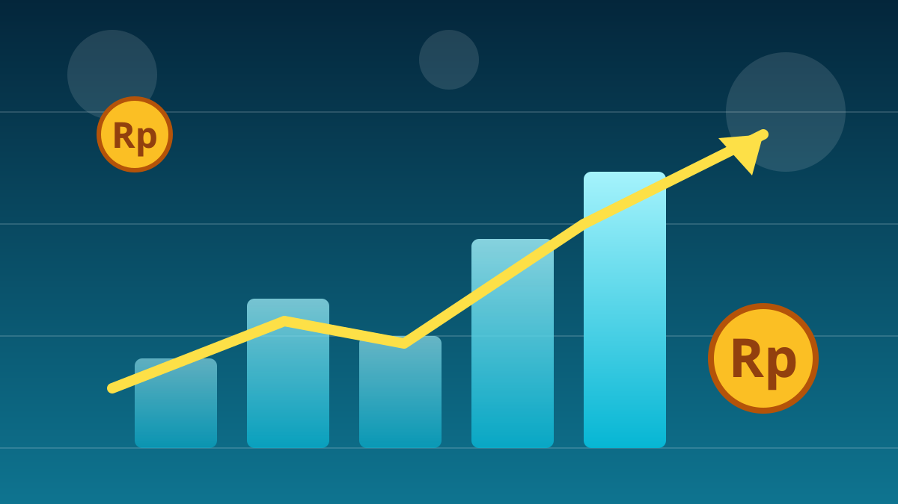

1 / 6

💰 EKONOMI
Duit Fintech Meledak, Tapi Startup Kecil Gigit Jari
Dananya naik 3x lipat, jumlah deal-nya malah anjlok. Ada apa di balik angka jumbo ini? Geser →
2 / 6
📈
Naik 206%, Tapi Deal Makin Sedikit
Startup fintech Asia Tenggara meraup US$2,3 miliar sepanjang Januari–September 2026, melonjak 206% dari US$748 juta pada periode yang sama tahun lalu, menurut data Tracxn yang dirilis 15 Oktober 2026.
Plot twist-nya: jumlah putaran pendanaan justru turun 44% menjadi hanya 42 transaksi. Duitnya makin gede, tapi yang kebagian makin sedikit.
3 / 6
🐋
4 Deal Jumbo Serap 86% Dana
Empat transaksi di atas US$100 juta mengumpulkan total US$2 miliar — setara 86% dari seluruh pendanaan fintech kawasan. Ant International jadi yang terbesar dengan US$1,2 miliar pada putaran Seri A Juli, didukung Alibaba dan Ant Group.
Dua deal jumbo lainnya: Crypto.com berbasis Singapura dengan US$400 juta (Seri D, didukung Citadel Securities), dan Ajaib dari Jakarta Barat dengan US$270 juta (Seri C).
4 / 6
🇮🇩
Ajaib: Deal Terbesar Indonesia Sejak 2022
Ajaib, platform investasi asal Jakarta Barat, mengantongi US$270 juta dari raksasa keuangan Jepang SBI Holdings pada Agustus 2026 — putaran teknologi terbesar Indonesia dalam empat tahun terakhir.
SBI disebut mengakuisisi sekitar 20% saham Ajaib, yang mengimplikasikan valuasi sekitar US$1,35 miliar. Total dana yang dihimpun Ajaib sejak 2019 pun melewati US$500 juta. Ajaib sendiri tak mengomentari angka valuasi tersebut.
5 / 6
🗺️
Singapura Masih Jadi Magnet Duit
Singapura menarik US$1,9 miliar alias sekitar 83% dari total pendanaan fintech Asia Tenggara pada Januari–September 2026. Jakarta Barat menyusul dengan US$270 juta — semuanya dari deal Ajaib.
Taguig di Filipina menarik US$60 juta. Polanya jelas: investor kini lebih memilih perusahaan mapan yang sudah punya pendapatan, ketimbang startup baru yang masih meraba-raba.
6 / 6
🤔
Efeknya ke lo apa?
Buat lo yang nabung dan investasi lewat aplikasi: persaingan antar platform bakal makin panas, dan itu biasanya berarti fitur makin bagus. Tapi jangan FOMO cuma karena ada berita pendanaan gede.
Cek dulu legalitas aplikasinya, pahami risikonya, dan jangan pernah investasi pakai duit yang lo butuhkan buat hidup sehari-hari. Hype boleh, boncos jangan.